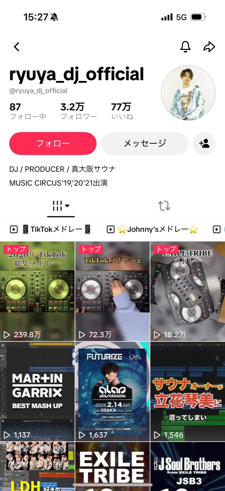
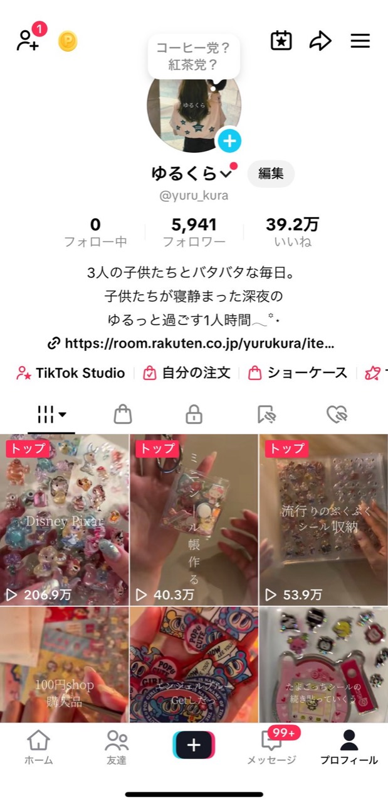

REAL TIKTOK STORIES
「私にもできる」が、ここで見つかる。
再生数だけで終わらせない。認知・集客・収益につながった8つのリアルなTikTok活用実績。
- 店舗集客
- 動画収益
- 商品販売
- イベント集客


239.8万1動画の再生
3.2万人フォロワー
集客＋収益活用実例
8異なる活用実績
239.8万1動画の再生実例
集客＋収益目的別の活用
スマホ中心の運用
SWIPE THE RESULTS
次は、あなたに合う
伸ばし方を見つける番。
実績はゆっくり自動で流れます。指で自由にスワイプでき、カードをタップすると「伸びた理由」と「変えたこと」まで確認できます。
イベント集客動画収益店舗売上商品販売認知拡大
あなたの伸びない原因も、無料で確認します。
プロフィールと投稿を見て、最初に直すべきポイントをLINEでお伝えします。
※掲載数値・内容は、運営者および各実績者から共有された情報と提供画像をもとに掲載しています。成果には個人差があり、同様の成果を保証するものではありません。
FREE ACCOUNT REVIEW
伸びない原因を、
まず1つ明確に。
LINEでアカウントURLを送るだけ。プロフィールや投稿を確認し、今のアカウントで最初に改善したいポイントをお伝えします。
- 01「添削希望」を送るボタンを押すと自動でコピーされます
- 02アカウントURLを送る現在のお悩みも一緒に確認します
- 03改善ポイントを確認最初に直したい部分をLINEでお返しします
- 04必要な方だけ個別相談へさらに詳しく整理したい場合のみご案内します
無料・LINEで完結
FREE TIKTOK ACCOUNT REVIEW
あなたのTikTok、伸びない原因を無料で添削します。
プロフィールと投稿内容を確認して、今すぐ優先して直したいポイントをLINEで個別にお伝えします。
アカウントURLを送るだけ初心者OK参加者には豪華10大特典もご用意
「添削希望」をコピーしてLINEへ →ボタンを押すと「添削希望」がコピーされ、そのまま公式LINEが開きます。